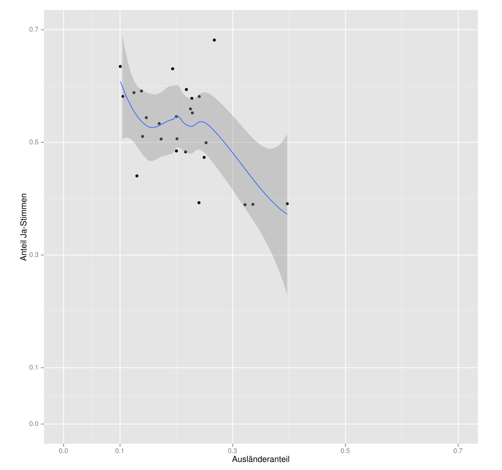

Der nachfolgende Artikel von Marco Kovic wurde auf dem Datenblog des Tagesanzeigers (blog.tagesanzeiger.ch) veröffentlicht. Er ist dort mittlerweile nicht mehr verfügbar, wesshalb wir den Inhalt hier hosten.
Je weniger Ausländer, desto mehr Ja-Stimmen? Wirklich?
Kurz nach der Abstimmung zur Zuwanderungsinitiative hiess es: Bezirke mit geringem Ausländeranteil stimmten dem SVP-Begehren eher zu. Hält der Befund einer tieferen Analyse stand? Marko Kovic vom IPMZ der Uni Zürich hat genau hingeschaut.
Seit der Abstimmung über die SVP-Zuwanderungsinitiative sind einige Wochen vergangen. Jetzt, wo sich die Gemüter beruhigen, kann eine detailliertere Analyse beginnen.
An Erklärungsversuchen für das Abstimmungsergebnis mangelt es nicht. Schon kurz nach der Abstimmung wurde Folgendes geäussert: Der Anteil an Ja-Stimmen sei dort eher hoch gewesen, wo es weniger Ausländer gibt. Demgemäss hätten gerade jene Leute für die Initiative gestimmt, die die Personenfreizügigkeit selber gar nicht im Alltag spüren.
Doch hält dieser Befund auch einer tieferen Analyse stand?
1 - Kantonsebene
Als erste Annäherung bietet sich ein Blick auf das Verhältnis von Ausländer- und Ja-Anteil auf Ebene der Kantone an:
Die X-Achse bildet den Ausländeranteil in Prozent (0,3 = 30%), die Y-Achse den Anteil der Ja-Stimmen in Prozent (0,5 = 50%) ab. Von blossem Auge scheint die vermutete Tendenz gegeben: Weniger Ausländer bedeuten mehr Ja-Stimmen. Etwas besser interpretierbar ist das Bild mit einer Trendlinie:

Der Zusammenhang scheint in die vermutete Richtung zu gehen, aber er ist nur annähernd linear. Der Graubereich über und unter der blauen Trendlinie sind die 95%-Konfidenzintervalle. Das bedeutet, dass der wahre Trend mit 95%-iger Wahrscheinlichkeit innerhalb dieser grauen Fläche liegt. Weil die Fläche sehr breit ist, ist die Unsicherheit zu gross, um hier schon Aussagen über Zusammenhänge zu machen.
2 - Gemeindeebene
Die Daten auf Kantonsebene sind zu grob. Es lohnt sich darum, die Daten einzelner Gemeinden zu vergleichen:

Oben links scheint es eine Sammlung von Gemeinden zu geben, wo sehr wenige Ausländer vorhanden sind und der Anteil an Ja-Stimmen hoch ist. Von blossem Auge ist es aber schwierig, mehr aus dieser Grafik herauszulesen. Auch hier hilft eine Trendlinie.
Der Verlauf der Trendlinie ist interessant: Sie ist nicht wie vermutet linear, sondern leicht kurvenförmig. Was bedeutet das?
Es gibt scheinbar einen Bereich der Punktwolke, wo ein Mehr an Ausländern mit weniger Ja-Stimmen einhergeht. Ab knapp 35% Ausländeranteil ist dieser Zusammenhang aber nicht mehr gegeben. Wiederum ist die graue Fläche der Konfidenzintervalle wichtig. In jenem Bereich, wo der vermutete Zusammenhang nicht mehr gegeben ist, fächert der Graubereich deutlich auf. Der Grund dafür ist, dass in diesem Bereich die Anzahl Gemeinden gering ist und die Berechnung eines Trends entsprechend unsicher.
3 - Gemeindeebene, nach Kantonen
Was passiert, wenn wir die Zusammenhänge auf Gemeindeebene betrachten, aber separat nach Kantonen?
In erster Linie ist in dieser Grafik die unterschiedliche Streuung innerhalb der Kantone zu sehen. In welche Richtung allfällige Zusammenhänge gehen, zeigen auch hier Trendlinien:
Der Nutzen der Trendlinien ist beschränkt, weil jene Kantone mit nur wenigen Gemeinden keine sinnvolle Berechnung solcher Linien zulassen. Definitive Schlüsse können auch hier nicht gezogen werden, aber innerhalb einiger Kantone (Schwyz, Thurgau, Bern, Freiburg) ist der vermutete negative Zusammenhang einigermassen deutlich abgebildet.
4 - Gemeindeebene, nach Gemeindegrösse
Könnte es vielleicht sein, dass weder alle Gemeinden zusammen noch die Gemeinden nach Kantonen die Antwort liefern, sondern zusätzlich noch die Gemeindegrösse eine Rolle spielt?
In der folgenden Grafik sind die Gemeinden in Gruppen gemäss ihrer Grösse eingeteilt. Dabei handelt es sich nicht um fixe Gruppengrössen, z.B. mit Gemeinden von 500 bis 5000 Einwohnern. Stattdessen sind die Gruppen anhand sogenannter Quantile eingeteilt:
Die Gruppe “0% - 25%” bedeutet, dass diese Gruppe die 25% kleinsten Gemeinden umfasst. Konkret, dass aus den Einwohnerzahlen der Gemeinden hervorgeht, dass 25% aller Gemeinden weniger als 591 Einwohner haben. Die nächsten 25% umfassen Gemeinden zwischen 591 und 1345.5 Einwohnern. Das nächste Viertel, von 50% - 75%, umfasst alle Gemeinden zwischen 1345.5 und 3284.25 Einwohnern. Das letzte Viertel von 75% bis 100% ist nochmals aufgeteilt in drei Untergruppen, weil die Anzahl Einwohner in diesem Bereich rasant zunimmt. Die Gruppe von 75% bis 90% umfasst Gemeinden in der Grösse von 3284.25 bis 7048.6 Einwohner; die Gruppe von 90% bis 99% Gemeindegrössen von 7048.6 bis 27214.74, und das Top-1% alle Gemeinden über 27214.74 Einwohner.
Mit steigender Einwohnerzahl sind die Punkte weniger dicht beieinander. Was bedeutet das für den Zusammenhang zwischen Ausländer- und Ja-Anteil? Wiederum helfen Trendlinien weiter:
Einen deutlichen Zusammenhang in die vermutete Richtung zeigt nur die Gruppe von 50% bis 75%. In kleinen Gemeinden mit zwischen c1400 und 3300 Einwohnern ist der Anteil an Ja-Stimmen umso höher, je weniger Ausländer dort wohnen. In den Gruppen mit noch kleineren Gemeinden ist diese Tendenz dort zu sehen, wo die Punktwolke dicht ist. Sobald die Punktwolke weniger dicht ist, wechselt die Trendlinie die Richtung.
Könnte es vielleicht sein, dass in Kleinstgemeinden ab einem gewissen Schwellenwert beim Ausländeranteil ein Gefühl von Entfremdung eintritt?
5 - Korrelationen
Ein Herantasten an die Daten über Grafiken kann ergänzt werden mit einer Berechnung von Korrelationen, einem einfachen Zusammenhangsmass, welches angibt, wie stark (Korrelationskoeffizient), wie zufällig (höhere Signifikanz = Zufall unwahrscheinlicher), und in welche Richtung (positiv oder negativ) Werte zusammenhängen.
| Gruppe | Korr.-Koeffizient | Signifikanz |
|---|---|---|
| AG | -0.192 | ** |
| AI | -0.783 | - |
| AR | -0.089 | - |
| BE | -0.4 | *** |
| BL | -0.214 | * |
| BS | 0.592 | - |
| FR | -0.338 | ** |
| GE | 0.236 | - |
| GL | -0.407 | - |
| GR | -0.029 | - |
| JU | -0.148 | - |
| LU | -0.305 | - |
| NE | -0.044 | - |
| NW | -0.202 | - |
| OW | -0.406 | - |
| SG | -0.223 | - |
| SH | -0.261 | - |
| SO | -0.041 | - |
| SZ | -0.589 | *** |
| TG | -0.518 | ** |
| TI | 0.102 | - |
| UR | -0.385 | - |
| VD | -0.158 | ** |
| VS | -0.05 | - |
| ZG | 0.041 | - |
| ZH | -0.281 | *** |
| 0% - 25% | -0.182 | *** |
| 25% - 50% | -0.249 | *** |
| 50% - 75% | -0.303 | *** |
| 75% - 90% | -0.106 | * |
| 90% - 99% | -0.094 | - |
| 99% - 100% | 0.202 | - |
| Schweiz | -0.222 | ** |
Die Tabelle zeigt mindestens vier Dinge:
- Der Zusammenhang ist nicht universal. Nicht jede Gruppe weist einen signifikanten, d.h., wahrscheinlich nicht-zufälligen Zusammenhang zwischen Ausländer- und Ja-Anteil auf.
- Der Zusammenhang ist, wenn signifikant, dann fast immer negativ. Der Kanton Genf bildet die einzige Ausnahme.
- Der Zusammenhang ist in kleinen Gemeinden deutlicher vorhanden als in grösseren. Dies äussert sich darin, dass der Effekt bei den drei Gruppen bis 25%, bis 50% und bis 75% stark und signifikant ist.
- Der Zusammenhang ist insgesamt schwach. Auf gesamtschweizerischer Ebene beträgt der Korrelationskoeffizient lediglich -0.25.
Die Schwäche des Zusammenhanges äussert sich auch darin, dass das sogenannte Bestimmtheitsmass (in diesem Fall einfach der Korrelationskoeffizient im Quadrat), welches angibt, welcher Teil der Verteilung durch den Zusammenhang erklärt wird, auf gesamtschweizerischer Ebene nur 0.067 beträgt. Das bedeutet, dass nur knapp 6.7% des Abstimmungsergebnisses durch den Ausländeranteil “erklärt” werden. Bei jener Gruppe aus der Tabelle, in der der Korrelationskoeffizient am stärksten ist (Kanton Schwyz), beträgt das Bestimmtheitsmass immerhin 0.527. D.h., im Kanton Schwyz “erklärt” der Ausländeranteil 53% des Abstimmungsergebnisses.
Fazit: (Vermutlich) Ja, aber …
So umfangreich die hier durchkämmten Daten sein mögen, sie sind immer noch zu grob, um Abstimmungsverhalten wirklich erklären zu können. Menschliches Handeln ist ein komplexes Geflecht von individuellen und sozialen, rationalen und irrationalen Vorgängen, und diese Vorgänge können in Statistiken nur sehr blass abgebildet werden.
Die Analyse zeigt aber dennoch einige Tendenzen auf. Es scheint, dass in der Tat ein Zusammenhang besteht zwischen dem Ausländeranteil und dem Anteil an Ja-Stimmen. Dieser Zusammenhang ist aber eher schwach und je nach Gruppierungsart der Daten deutlicher oder weniger deutlich oder gar nicht vorhanden. Darum gilt auch hier die goldene Regel: Korrelation darf nicht vorschnell mit Kausalität gleichgesetzt werden.
Die in diesem Blogeintrag verwendeten Daten stammen vom Bundesamt für Statistik. Die Angaben über die Anteile der ständigen ausländischen Bevölkerung stammen aus dem Jahr 2012. Die Rohdaten sind hier verfügbar.
Anmerkung: In den ursprünglich verwendeten Rohdaten, wie sie diesem Blogeintrag am 2. März zugrunde lagen, war ein Fehler enthalten. Das hat zu einer leichten Verzerrung geführt, sodass der Zusammenhang zwischen Ausländer- und Ja-Anteil weniger ausgeprägt war als in den korrigierten Grafiken und Berechnungen. Dem aufmerksamen Leser, welcher auf den Fehler hingewiesen hat, danke ich, und entschuldige mich für die mangelnde Sorgfalt.
Marko Kovic hat an der Universität Zürich Politikwissenschaft, Publizistik- und Kommunikationswissenschaft sowie Filmwissenschaft studiert. Schwerpunktmässig interessiert er sich für unkritischen Umgang der klassischen Massenmedien mit (pseudo-)wissenschaftlichen Themen, nicht zuletzt bei “weichen” Disziplinen wie den Sozialwissenschaften. Er ist Präsident des Vereins “Skeptiker Schweiz - Verein für kritisches Denken”. Zum Skeptiker-Blog.